keel-plugin-commands · 真实栈 E2E 报告
PASS总结果
36断言（失败 0）
9步骤
19截图
环境
| database | keel_commands_e2e_1795771715 |
|---|---|
| postgres | psql (PostgreSQL) 18.7 (Homebrew) |
| node | v22.23.3 |
| chrome | /Applications/Google Chrome.app/Contents/MacOS/Google Chrome |
| models | e2e-model (deterministic loopback provider; /compact summary included) |
| plugin | /Users/kzf/Development/GitHub/jixoai/fde2e/.worktrees/keel-plugin-commands-ui/scripts/keel-commands-e2e/plugin |
| databaseRowProbe | command_invocations (tenant, session, request_id) |
| publicDeployment | 未部署（仅本地 127.0.0.1 证据） |
| durationSeconds | 29 |
真实 PostgreSQL 临时库 + 真实 keel serve --auth local-only（13600–13799 临时端口）+ 真实插件安装/审批；无 Docker、无夹具命令。数据库与临时密钥已由 cleanup 删除。
进程回收验证 CLEAN
由 run.sh 在报告生成前写入 residue.txt：serve/model 端口必须 free，sidecar 与 fake provider 必须 gone。这里的标记同时参与总结果（STILL_* 即失败）。
run=keel_commands_e2e_1795771715 serve_port=13757 model_port=13758 serve_port=free model_port=free sidecar=gone fake_provider=gone
步骤索引
| # | 步骤 | 结果 | 断言 | 图 |
|---|---|---|---|---|
| 1 | 打开目录：内置命令可发现，顺序来自服务端 | PASS | 4/4 | 1 |
| 2 | 执行内置 /compact：命令行 + 既有压缩分隔线 | PASS | 4/4 | 1 |
| 3 | 安装插件命令：真实两阶段审批（install + enable） | PASS | 6/6 | 1 |
| 4 | 执行插件命令：args_schema 生成表单 → 结构化结果 | PASS | 3/3 | 1 |
| 5 | 重放同 requestId：同结果、不二次执行 | PASS | 4/4 | 1 |
| 6 | 破坏性命令：审批拒绝 → 已拒绝行，无副作用 | PASS | 2/2 | 2 |
| 7 | 破坏性命令：审批允许 → 只执行一次并给出结果 | PASS | 1/1 | 1 |
| 8 | 4.5 视觉：390/768/1024/1440 目录与表单无横向溢出 | PASS | 8/8 | 9 |
| 9 | 停用/卸载插件：目录与执行入口一起撤销 | PASS | 4/4 | 2 |
01 · 打开目录：内置命令可发现，顺序来自服务端 PASS
| 断言 | 结果 | 实际 | 期望 |
|---|---|---|---|
| builtin catalog has compact | PASS | compact |
["compact"] |
| no plugin command before install | PASS | |
[] |
| rendered rows match the server order | PASS | compact |
["compact"] |
| catalog-builtin: no horizontal overflow | PASS | [object Object] |
{"docScrollWidth":"<= innerWidth"} |

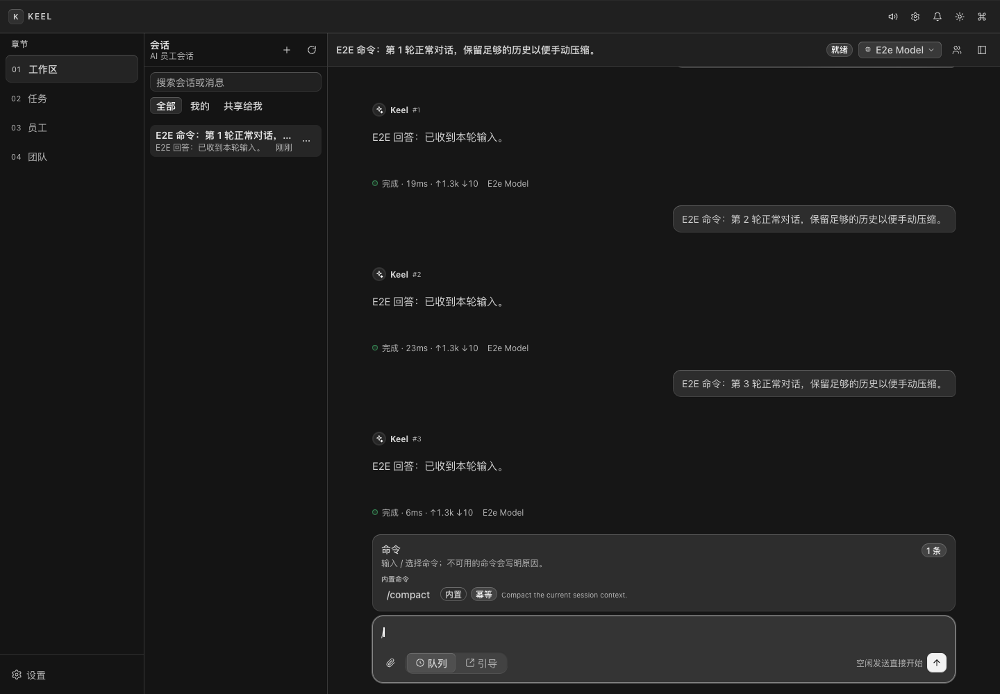
结构化细节
{
"overflow-catalog-builtin": {
"innerWidth": 1440,
"docScrollWidth": 1440,
"bodyScrollWidth": 1440
}
}02 · 执行内置 /compact：命令行 + 既有压缩分隔线 PASS
| 断言 | 结果 | 实际 | 期望 |
|---|---|---|---|
| durable command.invoked ok for compact | PASS | ok |
"ok" |
| compact performed (a real compaction, not a no-op) | PASS | [object Object] |
{"performed":true} |
| compaction divider rendered | PASS | present |
"present" |
| no user/assistant message pretends to be the command | PASS | absent |
"absent" |

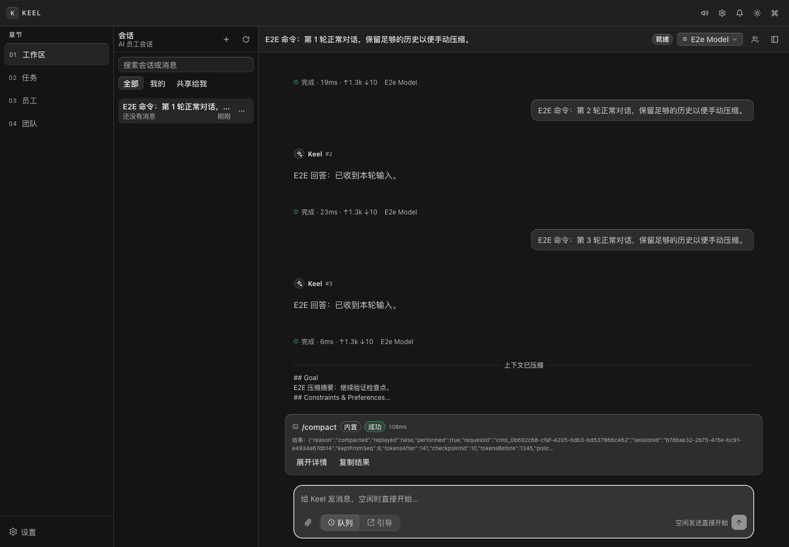
03 · 安装插件命令：真实两阶段审批（install + enable） PASS
| 断言 | 结果 | 实际 | 期望 |
|---|---|---|---|
| plugin installed | PASS | {"plugin":{"id":"e2e.commands","version":"1.0.0","kind":"sidecar","description":"E2E fixture plugin: three chat commands backed by one sidecar tool provider.","state":"installed","bundled":false,"source":{"type":"local","path":"/Users/kzf/Development/GitHub/jixoai/fde2e/.worktrees/keel-plugin-commands-ui/scripts/keel-commands-e2e/plugin"},"path":"/Users/kzf/Development/GitHub/jixoai/fde2e/.worktrees/keel-plugin-comma… |
"installed" |
| plugin enabled | PASS | {"plugin":{"id":"e2e.commands","version":"1.0.0","kind":"sidecar","description":"E2E fixture plugin: three chat commands backed by one sidecar tool provider.","state":"enabled","bundled":false,"source":{"type":"local","path":"/Users/kzf/Development/GitHub/jixoai/fde2e/.worktrees/keel-plugin-commands-ui/scripts/keel-commands-e2e/plugin"},"path":"/Users/kzf/Development/GitHub/jixoai/fde2e/.worktrees/keel-plugin-command… |
"e2e.commands enabled" |
| plugin commands are in the catalog | PASS | e2e.commands:refresh,e2e.commands:note,e2e.commands:purge |
["e2e.commands:refresh","e2e.commands:note","e2e.commands:purge"] |
| catalog order is builtin → plugin | PASS | compact,e2e.commands:refresh,e2e.commands:note,e2e.commands:purge |
["compact","e2e.commands:refresh","e2e.commands:note","e2e.commands:purge"] |
| UI rows match the fresh catalog | PASS | compact,e2e.commands:refresh,e2e.commands:note,e2e.commands:purge |
["compact","e2e.commands:refresh","e2e.commands:note","e2e.commands:purge"] |
| catalog-with-plugin: no horizontal overflow | PASS | [object Object] |
{"docScrollWidth":"<= innerWidth"} |

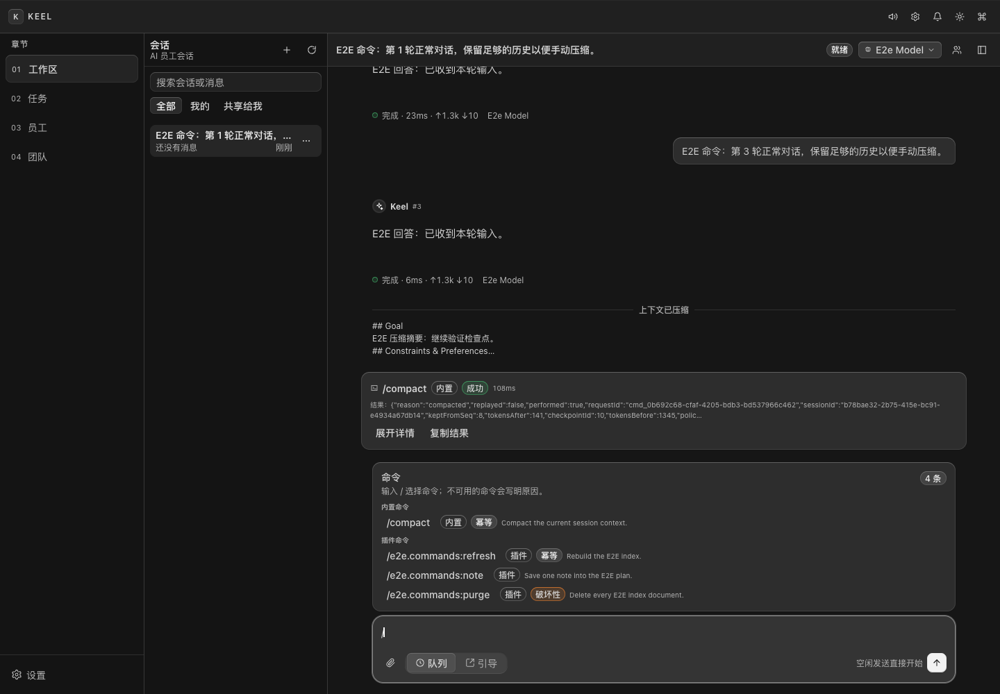
结构化细节
{
"overflow-catalog-with-plugin": {
"innerWidth": 1440,
"docScrollWidth": 1440,
"bodyScrollWidth": 1440
}
}04 · 执行插件命令：args_schema 生成表单 → 结构化结果 PASS
| 断言 | 结果 | 实际 | 期望 |
|---|---|---|---|
| plugin command result row | PASS | e2e.commands:refresh |
"e2e.commands:refresh" |
| result row carries a requestId | PASS | cmd_39b23c8c-5ac7-4275-b685-c9d6455edf1e |
|
| sidecar executed refresh once | PASS | refresh |
["refresh"] |

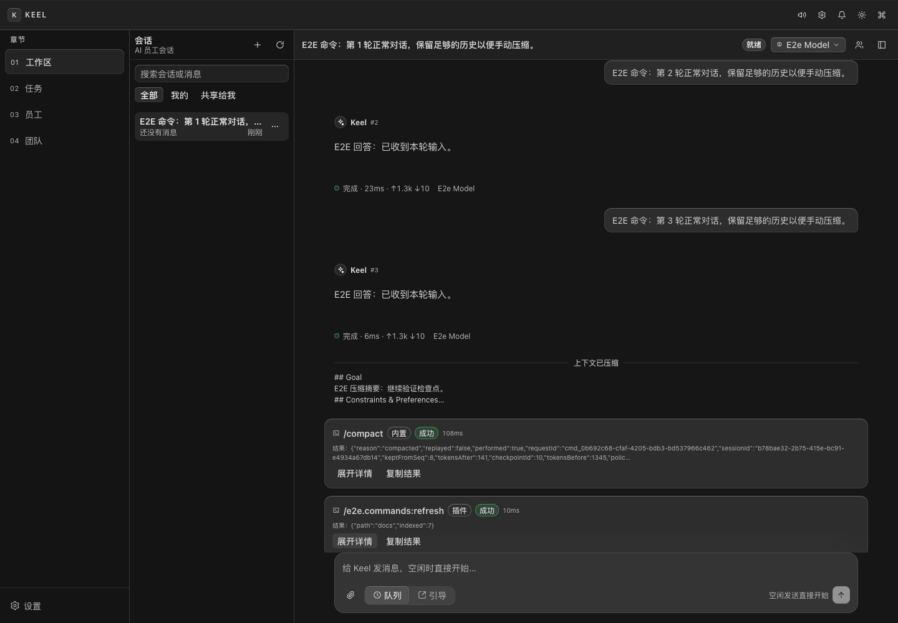
05 · 重放同 requestId：同结果、不二次执行 PASS
| 断言 | 结果 | 实际 | 期望 |
|---|---|---|---|
| replay answers 200 | PASS | 200 |
200 |
| replay result is the first result | PASS | [object Object] |
{"indexed":7,"requestId":"cmd_39b23c8c-5ac7-4275-b685-c9d6455edf1e"} |
| replay did not execute the tool again | PASS | 1 |
1 |
| one durable invocation row for the requestId | PASS | 1 |
1 |

06 · 破坏性命令：审批拒绝 → 已拒绝行，无副作用 PASS
| 断言 | 结果 | 实际 | 期望 |
|---|---|---|---|
| refusal is a durable command row | PASS | refused |
"refused" |
| denied command never ran the tool | PASS | 0 |
0 |

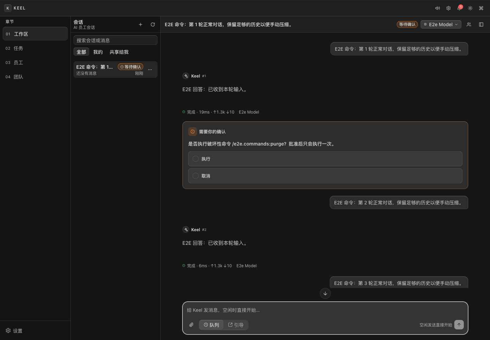

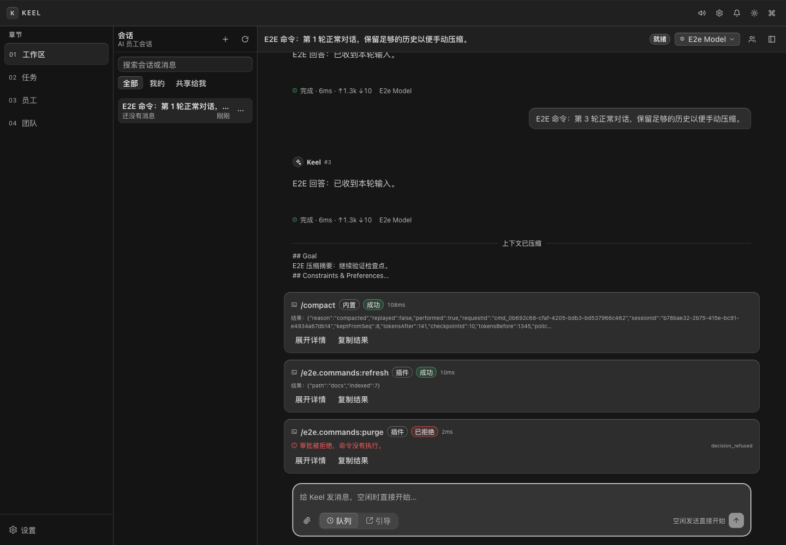
结构化细节
{
"expectedConsole": [
"Failed to load resource: the server responded with a status of 403 (Forbidden)"
]
}07 · 破坏性命令：审批允许 → 只执行一次并给出结果 PASS
| 断言 | 结果 | 实际 | 期望 |
|---|---|---|---|
| approved command executed exactly once | PASS | 1 |
1 |

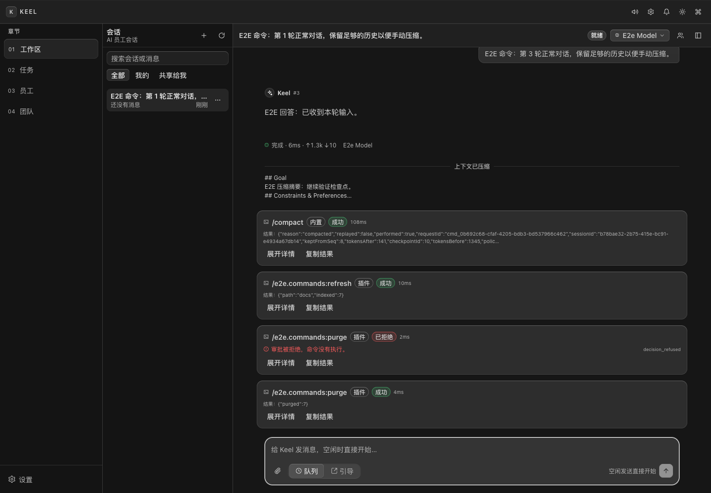
08 · 4.5 视觉：390/768/1024/1440 目录与表单无横向溢出 PASS
| 断言 | 结果 | 实际 | 期望 |
|---|---|---|---|
| catalog-390: no horizontal overflow | PASS | [object Object] |
{"docScrollWidth":"<= innerWidth"} |
| form-390: no horizontal overflow | PASS | [object Object] |
{"docScrollWidth":"<= innerWidth"} |
| catalog-768: no horizontal overflow | PASS | [object Object] |
{"docScrollWidth":"<= innerWidth"} |
| form-768: no horizontal overflow | PASS | [object Object] |
{"docScrollWidth":"<= innerWidth"} |
| catalog-1024: no horizontal overflow | PASS | [object Object] |
{"docScrollWidth":"<= innerWidth"} |
| form-1024: no horizontal overflow | PASS | [object Object] |
{"docScrollWidth":"<= innerWidth"} |
| catalog-1440: no horizontal overflow | PASS | [object Object] |
{"docScrollWidth":"<= innerWidth"} |
| form-1440: no horizontal overflow | PASS | [object Object] |
{"docScrollWidth":"<= innerWidth"} |

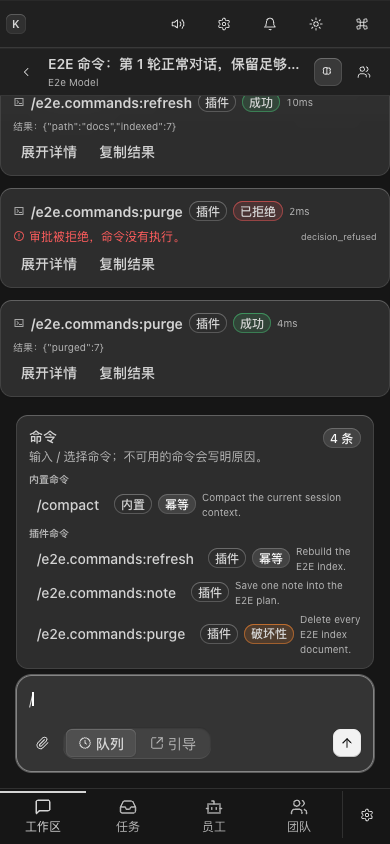

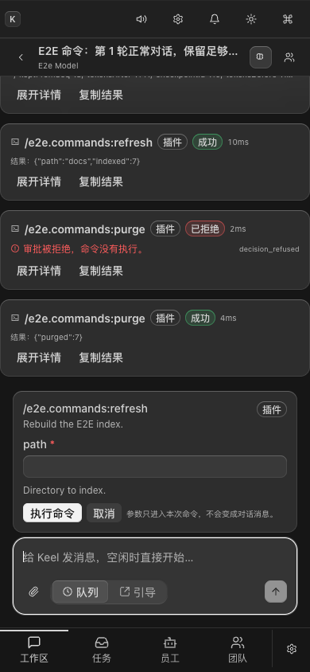

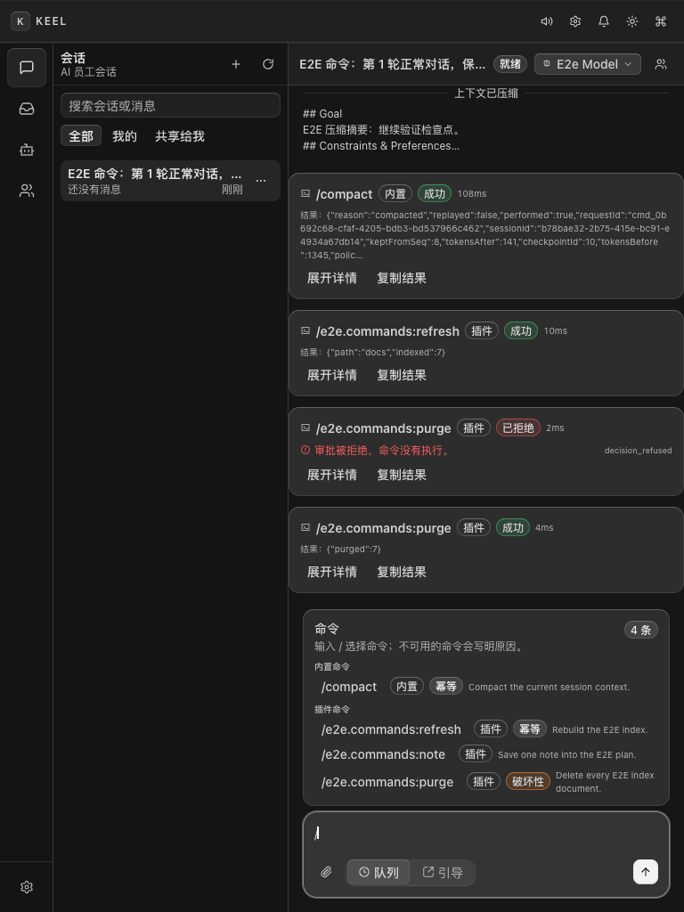

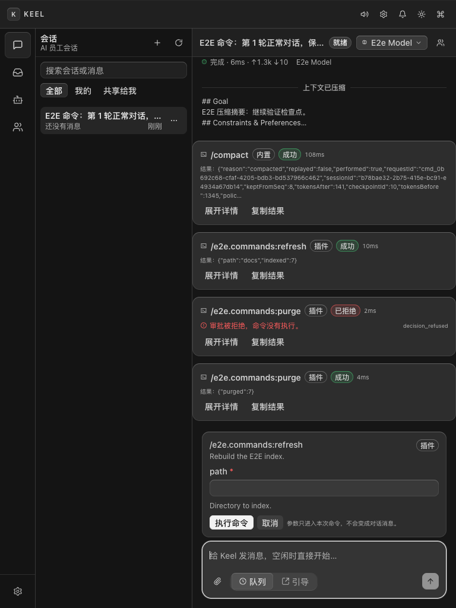

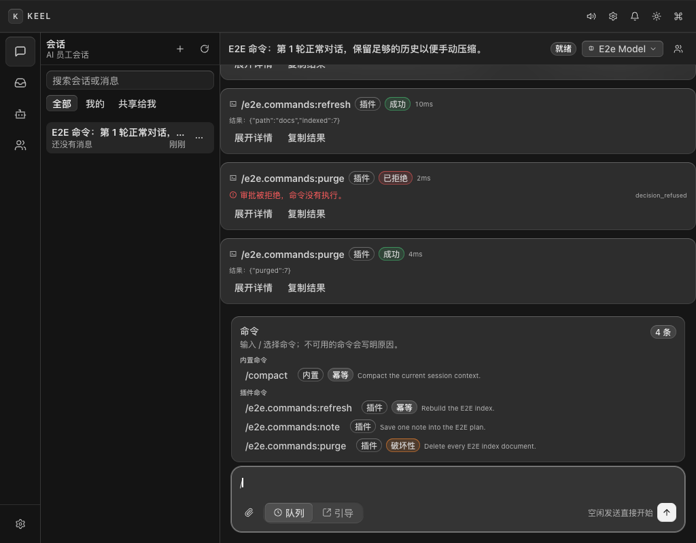

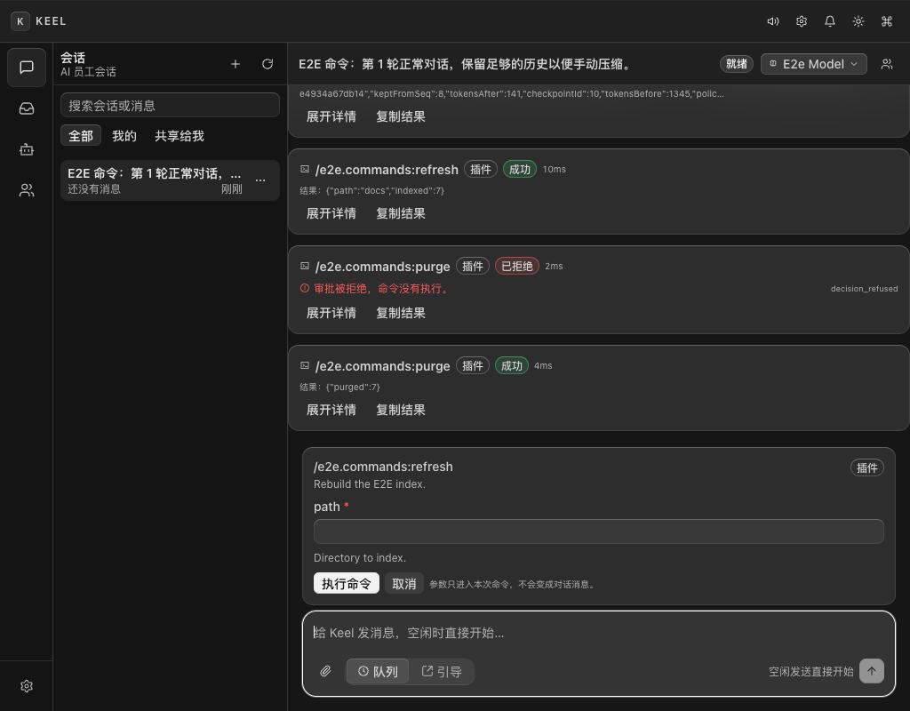

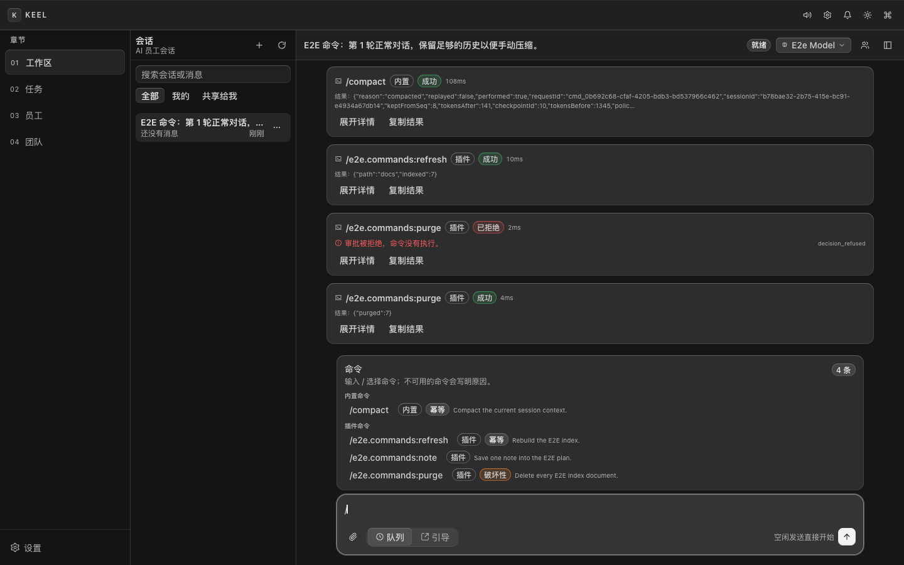

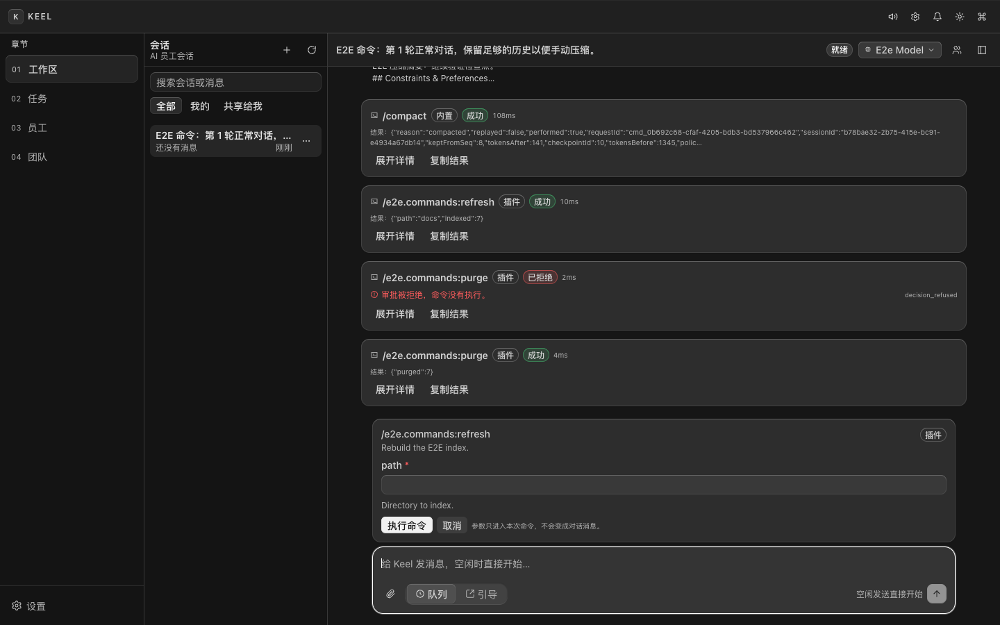

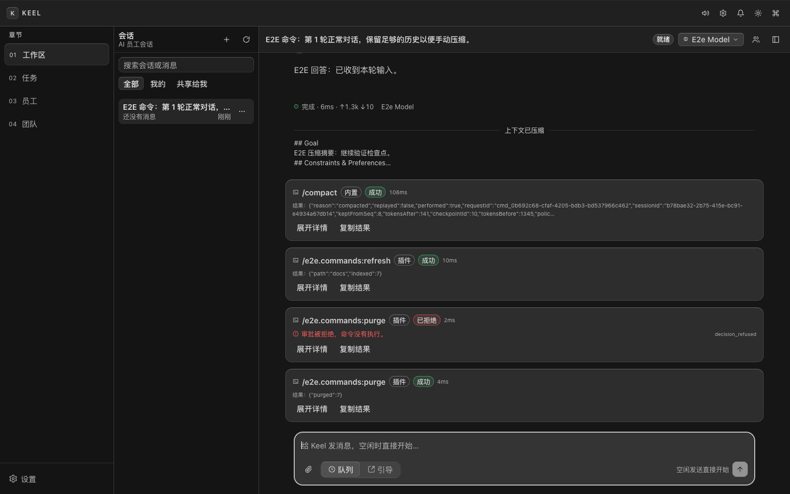
结构化细节
{
"overflow-catalog-390": {
"innerWidth": 390,
"docScrollWidth": 390,
"bodyScrollWidth": 390
},
"overflow-form-390": {
"innerWidth": 390,
"docScrollWidth": 390,
"bodyScrollWidth": 390
},
"overflow-catalog-768": {
"innerWidth": 768,
"docScrollWidth": 768,
"bodyScrollWidth": 768
},
"overflow-form-768": {
"innerWidth": 768,
"docScrollWidth": 768,
"bodyScrollWidth": 768
},
"overflow-catalog-1024": {
"innerWidth": 1024,
"docScrollWidth": 1024,
"bodyScrollWidth": 1024
},
"overflow-form-1024": {
"innerWidth": 1024,
"docScrollWidth": 1024,
"bodyScrollWidth": 1024
},
"overflow-catalog-1440": {
"innerWidth": 1440,
"docScrollWidth": 1440,
"bodyScrollWidth": 1440
},
"overflow-form-1440": {
"innerWidth": 1440,
"docScrollWidth": 1440,
"bodyScrollWidth": 1440
}
}09 · 停用/卸载插件：目录与执行入口一起撤销 PASS
| 断言 | 结果 | 实际 | 期望 |
|---|---|---|---|
| disabled plugin commands are gone | PASS | |
[] |
| UI no longer draws the disabled commands | PASS | compact |
[] |
| execution entry is 404 after disable | PASS | 404 |
404 |
| uninstall keeps the command gone | PASS | compact |
["compact"] |

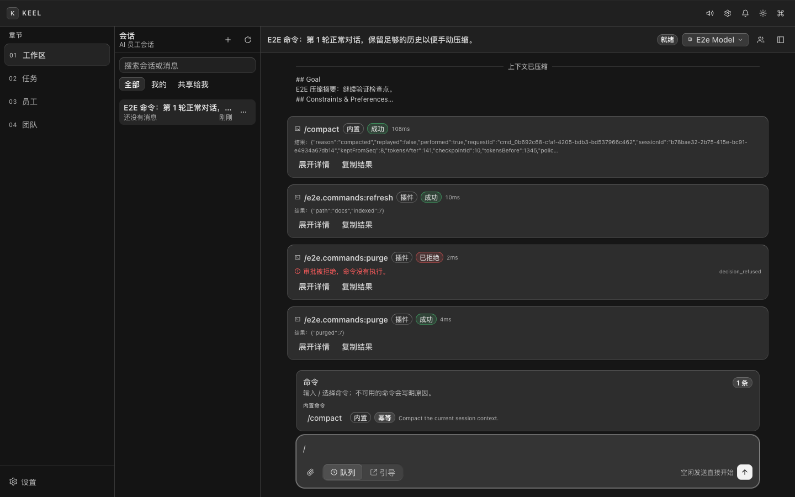

浏览器诊断
console error
无 console error。
page error
无 page error。
失败请求
无失败请求（favicon 除外）。
拒绝 destructive 命令时，浏览器会把服务端预期的 403 记成一条 console error；该条已在 E2E 的数据里单列为 expectedConsole，不计入错误。
TUI 证据
命令菜单、生成表单、命令结果行与 destructive 审批由独立的 nsh test --target tui 门禁验证（日志见 ../ui-nsh-test-tui.txt 与 ../ui-nsh-test-tui-commands.txt）；本报告只陈述本页执行的真实栈浏览器步骤。
范围与限制
- 真实 PostgreSQL 临时库、真实
keel serve --auth local-only、真实插件 install/enable 两阶段审批；步骤只覆盖目录、/compact、插件命令、同 requestId 重放、拒绝与允许 destructive、停用/卸载和四档视口。 - 本报告的声明范围就是上列 9 个步骤的断言与截图；未列出的能力不作声明。
- 无权限命令态由 TUI 五态门禁覆盖；本页的 403 是 destructive 审批拒绝的预期响应。
- 未部署公网：本报告与截图作为仓库内证据提交，不提供公网链接。
- 没有 coverageRows / 自动 EXEMPT 表，也不声明
UNCOVERED=0；覆盖性以 9 个步骤的 36 条断言与 19 张截图为准。